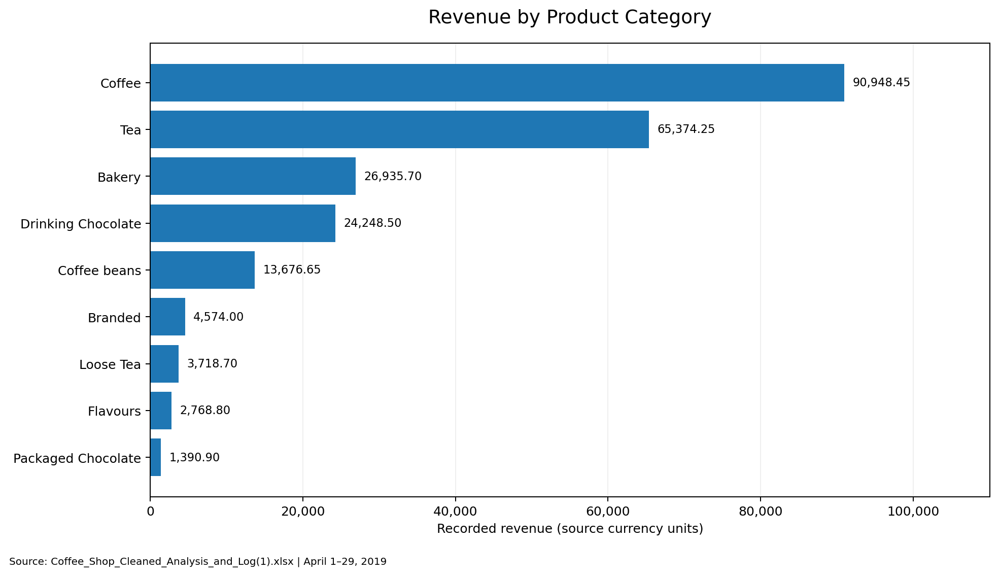
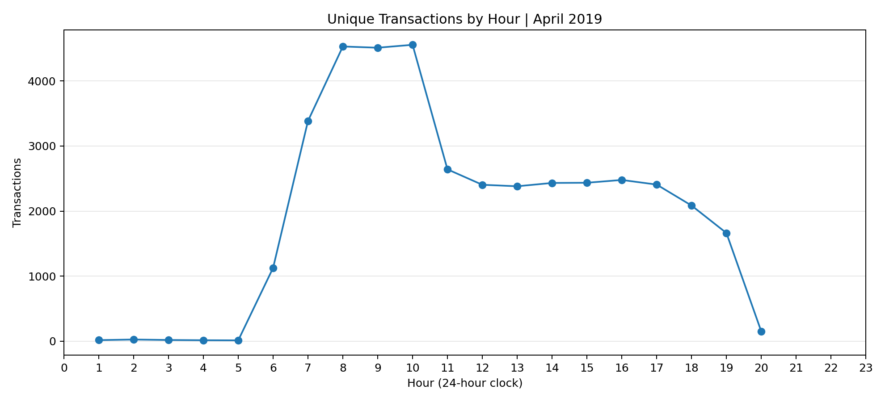
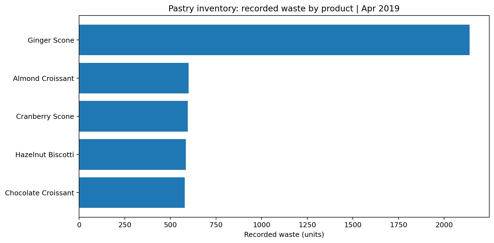

Where does revenue come from?
Rank products, product categories and stores to identify the main revenue contributors.
SALES PERFORMANCEAn end-to-end business intelligence case study exploring which products drive revenue, when customers buy, and where pastry inventory is being lost. Built with Excel, AI-assisted analysis, and reproducible visuals.
Three linked questions frame the analysis. The aim is not a prettier spreadsheet; it is a decision framework that can be checked, challenged, and repeated.
Rank products, product categories and stores to identify the main revenue contributors.
SALES PERFORMANCECompare real transactions by weekday, hour and outlet to support operational planning.
CUSTOMER DEMANDInvestigate pastry waste by product, store and date while preserving quality exceptions.
INVENTORY EFFICIENCYA traceable, documented workflow. Select any stage to see exactly what was done, the tools used and what was produced.
Cleaned or calculated fields were placed directly to the right of their source fields.
Recorded amounts retained; potential promotions and exceptions not silently overwritten.
Three stock reconciliation flags and 18 waste-percentage discrepancies kept visible.
These charts are drawn directly from aggregated values in the analysis outputs. Switch between questions and metrics. Source data remains unchanged.
Reporting caveat: amounts use the source dataset's currency units; the sales table does not independently label currency. Historical observations are descriptive, not proof of causation or future results.
Recorded coffee-category revenue was 90,948.45, approximately 38.93% of total sales. Hell's Kitchen led the three outlets on total revenue, while Lower Manhattan led on average transaction value.
Inspect sales results ↗
10 AM was the busiest recorded transaction hour. Wednesday led on average daily transactions after accounting for weekday occurrence; store-level peaks varied.
Inspect demand results ↗
Out of 4,500 recorded waste units, 2,140 came from Ginger Scone. The overall weighted recorded waste rate was 60.93%, with unresolved stock-record differences disclosed.
Inspect waste results ↗
These are recommendations to evaluate, not changes already deployed or quantified cost savings.
Monitor availability of leading beverages, review category contribution and compare product margins before rebalancing inventory.
TRACK: CATEGORY SALES · MARGIN · STOCKOUT RATEReview resources around the 8–11 AM peak and test outlet-specific schedules against actual service capacity.
TRACK: TRANSACTIONS/HOUR · SERVICE TIMEVerify the definition of waste, investigate Ginger Scone and run controlled production-planning trials.
TRACK: WEIGHTED WASTE · SELL-THROUGHSales have 230 amount mismatches; inventory has 3 reconciliation and 18 percentage-review flags. Neither promotions nor spoilage can be conclusively inferred from these fields. The dataset is historical, and this project does not establish causal impact.
Source inspection, side-by-side cleaned columns, quality checks and audit log.
DATA PREPARATIONPrompt-driven analysis, reproducible aggregations, chart creation and management interpretation.
AI-ASSISTED ANALYTICS11-slide board-style presentation showing the approach, outcomes and limitations.
COMMUNICATIONPhased Azure / Microsoft 365 with Power BI recommended for future controlled reporting.
RECOMMENDED · NOT DEPLOYEDArchitecture is a recommendation only. No production cloud deployment or Power BI report is claimed as completed.
Explore the documented process and reproducible source workbook. The published downloadable workbook includes prepared analytical tables, not the broader original customer and staff records.
Step-by-step methodology, findings, validation and portfolio narrative.
15 PAGES · PDFSales, products, outlets, pastry records and the 15-step cleaning log.
EXCEL · XLSXApproach, three questions, findings, AI evidence, cloud recommendation and references.
11 SLIDES · PPTXAuditable date, hourly, weekday and outlet-level summaries.
JSON DATAI'm Chukwuemeka David Udezue, a Data Analyst, Business Intelligence and Visualisation Specialist and founder of Blossom Graphviz Concept. I translate messy business data into clear analysis, visual narratives and decisions teams can act on.
This project shows how I frame business questions, preserve source integrity, verify AI-assisted outputs and communicate findings with practical recommendations.
Visual Excellence.
Data-Driven Growth.
Open to data analytics, BI, dashboard, reporting and analytical consulting opportunities. Explore this work, then let's discuss your problem.
Email options open Gmail or copy the address. The call link works on devices with a calling app; WhatsApp opens in the app or browser.